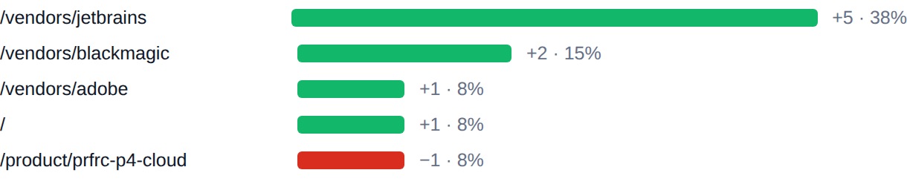

BIZSoft Growth Intelligence Daily Search, Demand & Experiment Control · 19.08.2026 ПОИСК: смешаннаяДАННЫЕ: ограниченоОТ ВАС: не требуется Яндекс по 17.08 · Google по 17.08 · Метрика по 18.08 · спрос не измерен | ||||||||||||||||
| От вас: Решений от вас сегодня не требуется. Остальное система ведёт сама. | ||||||||||||||||
Показатели
| ||||||||||||||||
Сигналы дня Показы в Google за неделю 19 → 31 (+12) Страницы сайта стали показываться чаще; переходов это пока не дало. достоверность: низкая, база в десятки показов Страницы в поиске Яндекса 169 → 169 (+0) Объём проиндексированного сайта не изменился. достоверность: достаточная Запросы выборки на первой странице 86 → 83 (−3) Яндекс в целом стабилен, внутри выборки есть умеренное снижение. достоверность: достаточная | ||||||||||||||||
Что дало изменение Google. Изменение +9 по страницам. Прибавили: /vendors/jetbrains, /vendors/blackmagic, /vendors/adobe. Потеряли: /product/prfrc-p4-cloud. накопленное окно 27 дней, сдвинуто на сутки +5 /vendors/jetbrains 38% изменения +2 /vendors/blackmagic 15% изменения +1 /vendors/adobe 8% изменения +1 / 8% изменения −1 /product/prfrc-p4-cloud 8% изменения  /vendors/jetbrains +5; /vendors/blackmagic +2; /vendors/adobe +1; / +1; /product/prfrc-p4-cloud −1 Яндекс. Изменение −19 по запросам. Прибавили: рекрафт тарифы, recraft годовая подписка. Потеряли: heygen тарифы, collab seat figma, heygen купить. выборка топ-100 запросов, окно 2026-08-05–2026-08-17 −6 heygen тарифы 6% изменения −5 collab seat figma 5% изменения · выпала +4 рекрафт тарифы 4% изменения −4 heygen купить 4% изменения +3 recraft годовая подписка 3% изменения | ||||||||||||||||
Контроль эксперимента
| ||||||||||||||||
Система уже делает Показаны задачи со сменой статуса, блокировкой или сроком в ближайшую неделю
| ||||||||||||||||
Где ближе всего рост heygen тарифы 90 показов по запросу за период, средняя позиция 6.46 — в первой десятке, но без переходов Потенциал: переходы при том же объёме показов — платить за них не нужно Что делаем: переписать заголовок и описание страницы под запрос решение к 26.08 · достоверность: sufficient оплата depositphotos для юридических лиц из россии 32 показов по запросу за период, средняя позиция 3.09 — в первой десятке, но без переходов Потенциал: переходы при том же объёме показов — платить за них не нужно Что делаем: переписать заголовок и описание страницы под запрос решение к 26.08 · достоверность: low как оплатить depositphotos в рублях 32 показов по запросу за период, средняя позиция 7.09 — в первой десятке, но без переходов Потенциал: переходы при том же объёме показов — платить за них не нужно Что делаем: переписать заголовок и описание страницы под запрос решение к 26.08 · достоверность: low | ||||||||||||||||
Здоровье данных
| ||||||||||||||||
Следующие проверки 26.08 — SEO-EXP-001: первый замер кликабельности изменённых страниц 22.08 — DATA-001: Сверка источников измерения До этих дат выводы по эксперименту не делаются: данных выдачи за более короткий срок недостаточно, чтобы отличить эффект от обычных колебаний. | ||||||||||||||||
| Полный отчёт (техническая копия)Журнал работ |